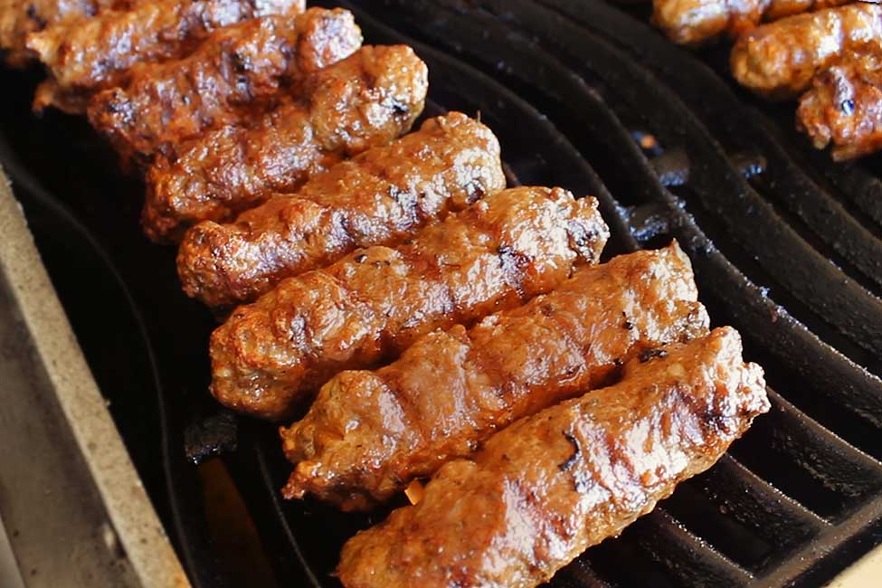

Mici

This delicious Romanian barbecue dish is probably the most popular
celebration dish in the country. Find out how to make it from our recipe
below!
Mici (or mititei) is a dish from the Romanian cuisine, consisting of
grilled ground meat rolls in cylindrical shape made from a mixture of
beef, lamb with spices, such as garlic, black pepper, thyme, coriander,
anise, savory, and sometimes a touch of paprika
Mici are very popular all across Romania, with an estimated 440 million
mici consumed each year in Romania. They are eaten in homes, restaurants
and pubs, but are probably most associated with outdoor grilling. As many
Romanians celebrate International Workers' Day (1 May) by going to
barbecues and picnics, mici have become strongly associated with the
holiday in recent years, 30 million mititei being eaten in Romania on the
first day of May in 2019.[6] Mici are sometimes called the "national dish
of Romania" in the media, despite lacking any such official designation.
Ingredients:
-
Meat – These are usually made with a mixture of meat such as
ground beef, ground pork and ground lamb. You’re looking for a fattier
meat and not extra lean. The fat will make the little sausages extra
juicy and not dry and boring. You will want to combine at least two
meats and not use just one.
-
Thyme – Dried thyme is one of the most important ingredients in
this recipe. The amount for this is something you have to play with.
Personally, I’m not a huge fan of dried thyme, so I usually use very
little. If you like, feel free to add more. Traditionally “cimbru” is
used which translates to “summer savory”. However, I never find it here,
so thyme is an acceptable substitute.
-
Salt and Pepper – You need quite a bit of salt and some pepper,
especially since we’re working with 3 pounds of meat.
-
Baking soda – This is the secret ingredient in mititei and I
really wouldn’t recommend omitting this ingredient. The purpose of the
baking soda is to make the mititei fluffier and it also helps with
digestion. Again this is something you can play with in regards to how
much to use. I recommend to use as instructed in the recipe the first
time you make these, and then later on adjust to your preference.
-
Garlic – Garlic is actually optional here but I love a bit of
garlic flavor in my mititei. You can also use garlic powder instead.
-
Other spices – Allspice and Sweet Paprika are also required.
Allspice gives a warm and spicy-sweet flavor. The paprika is great
because not only does it give the mititei a great color but it also adds
a bit of fruity and bitter flavor.
-
Beef Broth – This is also added to make the sausages juicy and
plump. Sometimes we also use mineral water instead of the broth, which
also helps to make them fluffy and tender.
Steps:
-
Make the meat mixture: Add all the ingredients and ¼ cup of the
broth to the bowl of your stand mixer. Start mixing using the dough hook
or paddle attachment for about 3 minutes on medium low. As the liquid is
absorbed by the meat, keep adding ¼ cup of broth at a time until all the
liquid is absorbed.
-
Cover and chill: Transfer the meat mixture to a bowl and press it
down with a spatula to push out any air bubbles. Cover with plastic wrap
and refrigerate overnight. This allows all the ingredients to get
friendly, resulting in very tasty sausages.
-
Shape into sausages: Form the meat into long little sausages that
are about 4 inches long and about 1 inch in diameter. You can use a
piping bag, this way you’ll end up with perfect mititei all the same
size. You can also use your clean hands to shape them into long
sausages. This is easier achieved if you wet your hands as you roll the
meat. Make sure they are long enough, as they do tend to shrink when
grilling.
-
Grill the sausages: Grill on a hot grill, turning every 3 minutes
on each side. You want to make sure the grill is not scorching hot, as
they will burn on the outside and will end up raw in the middle. If the
heat is too low they will dry out.
-
Serve: Serve with lots of mustard and french fries.